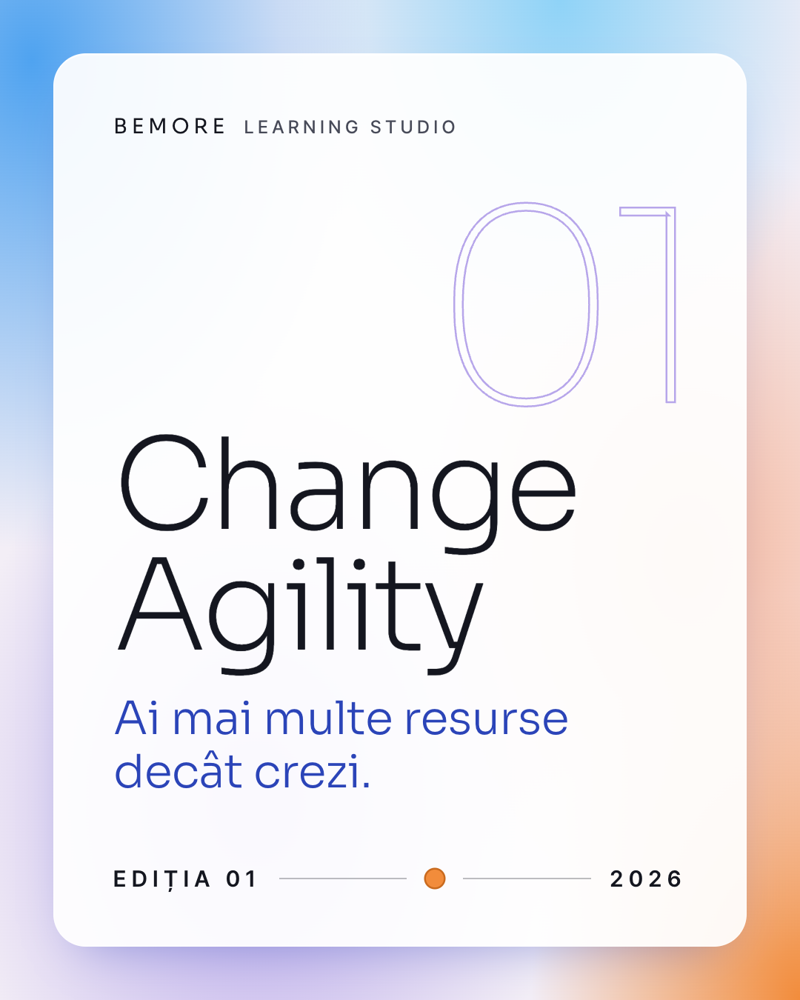
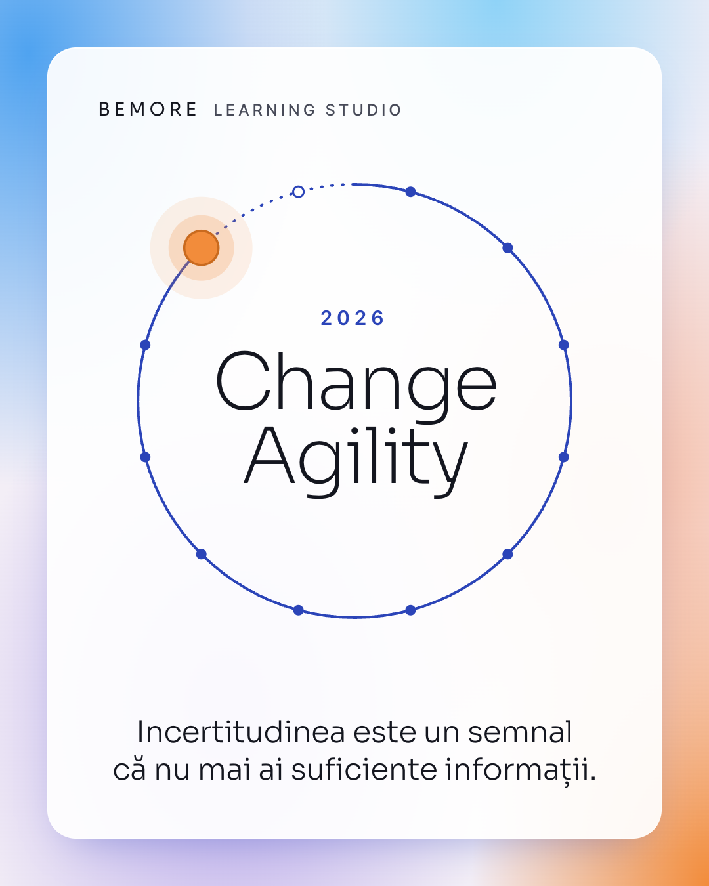
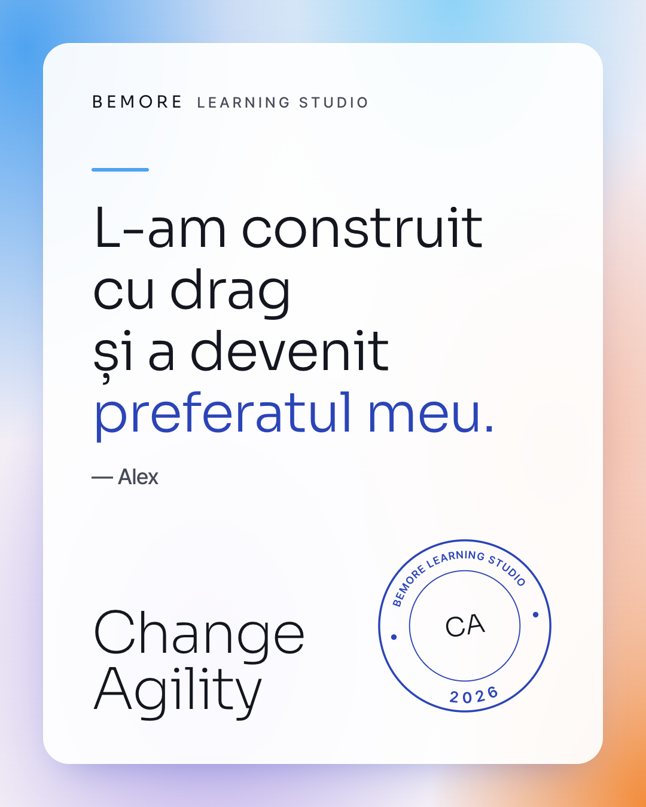
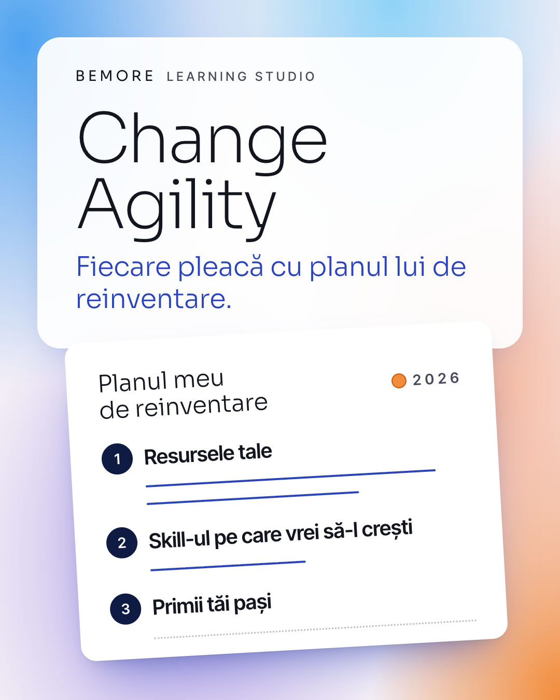
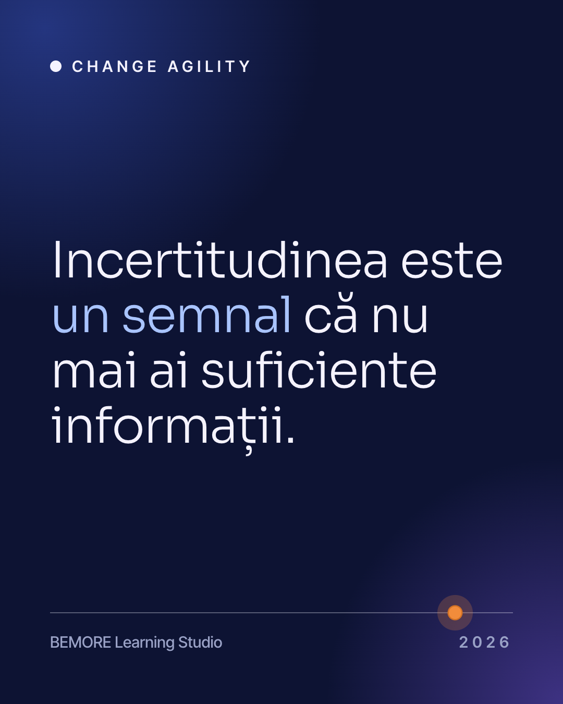
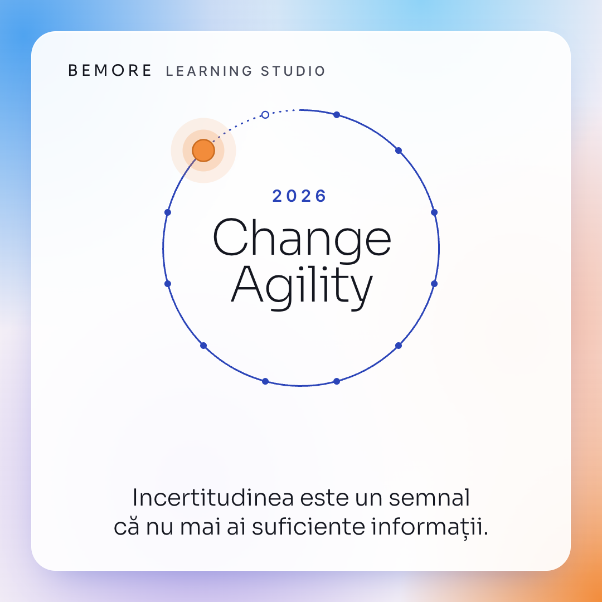

Alexandru Moleaacum
Anul acesta mi s-a cerut un workshop despre schimbare. L-am construit cu drag și a devenit preferatul meu. …mai mult

Postarea Change Agility · imaginea
Cinci idei, 1080 × 1350 (portret, 4:5), în brandul BEMORE. Mai jos, fiecare la mărimea din feed pe un telefon de 375 px, sub primele rânduri din postarea v3. Patru pe Lumină, una pe Noapte (doar pentru mesajul cheie). Textele de pe imagini sunt fraze ale lui Alex.
Recomandarea Ioanei
Cursul ca un tiraj numerotat: prima ediție. Anul stă în colofon, unde îl pui pe o carte sau pe o gravură. „01” mare, doar contur, umple aerul de sus.
Anul acesta mi s-a cerut un workshop despre schimbare. L-am construit cu drag și a devenit preferatul meu. …mai mult

O orbită = un an. Unsprezece luni sunt puncte mici, noiembrie e punctul aprins. Arcul e plin până la el; decembrie e încă punctat. În centru: 2026, mic, și numele.
Anul acesta mi s-a cerut un workshop despre schimbare. L-am construit cu drag și a devenit preferatul meu. …mai mult

Fraza lui, semnată, și ștampila atelierului cu anul, ca pe un lucru făcut de mână. Merge doar dacă postarea nu deschide cu aceeași frază (altfel se repetă).
Anul acesta mi s-a cerut un workshop despre schimbare. L-am construit cu drag și a devenit preferatul meu. …mai mult

Planul de reinventare fotografiat ca un produs: foaia mare, în lumină, pe jumătate scrisă. Anul e în colțul foii, unde îți scrii data. Leagă postarea de pagina cursului.
Anul acesta mi s-a cerut un workshop despre schimbare. L-am construit cu drag și a devenit preferatul meu. …mai mult

Fraza lui despre incertitudine, ca ecranele de reflecție din sală. Anul e o linie de orizont cu un singur punct aprins (tot în noiembrie) și „2026” mic, jos.
Anul acesta mi s-a cerut un workshop despre schimbare. L-am construit cu drag și a devenit preferatul meu. …mai mult

Portret sau pătrat
Pe telefon, 4:5 are 469 px înălțime, pătratul 375 px: cu un sfert mai puțin. Toate cinci sunt gândite pentru portret. Singura care ar merge la fel de bine pătrat e B (cercul e pătrat prin natura lui), dar pierde din mărimea frazei.

Imaginea și linkul